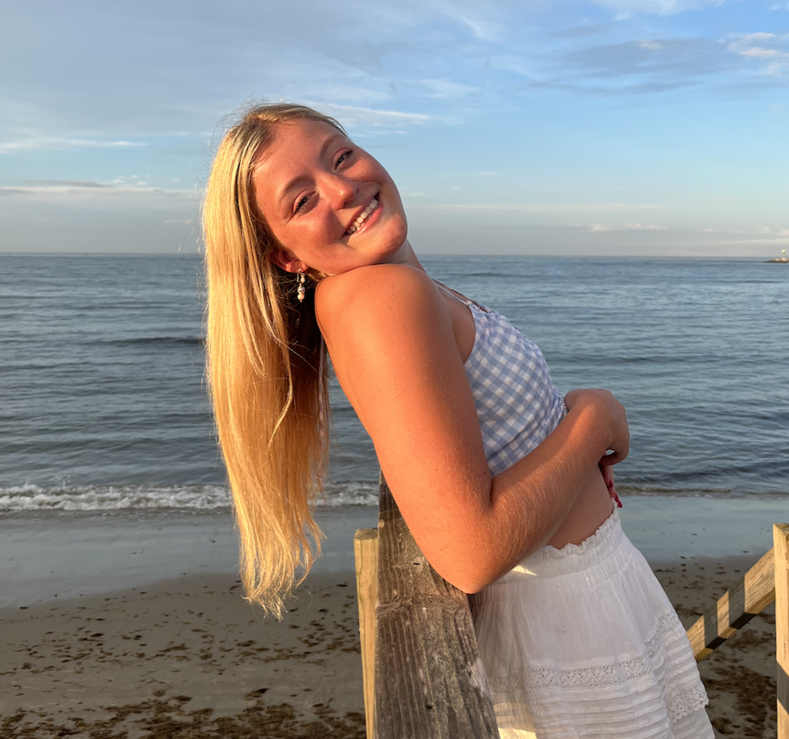
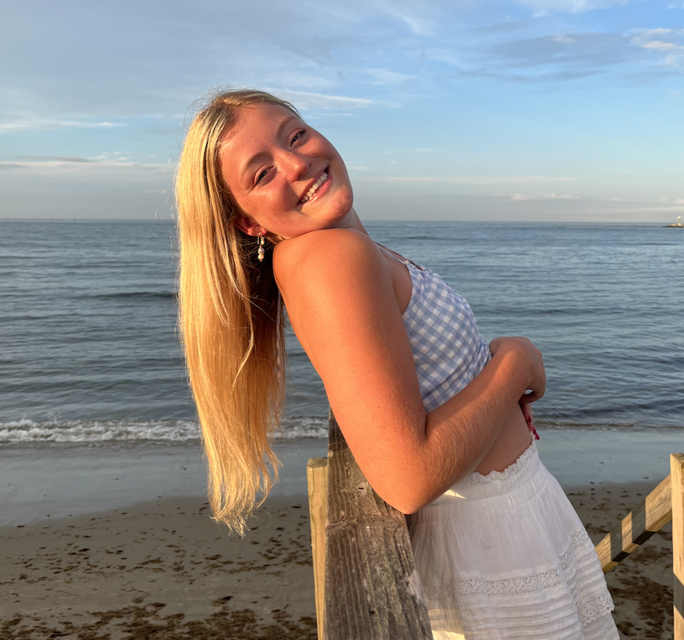

Hi! My name is Brynn Paccione and I am a current Junior is the Stamps School of Art and Design. I have always wanted to learn web design and wanted to code my own art portfolio. Using the skills I've learned in this class for my final project I am coding my own art portfolio that I can use and show to future employers. To both show my technology and art skills.
As an upperclassmen at the University of Michigan I am honing my skills and focusing in on a certain art medium. That being illustration and animation. With an futher career goal of working as a visual development artist for Disney.
Currently I am working as a freelance illustrator illustrating a childrens book!